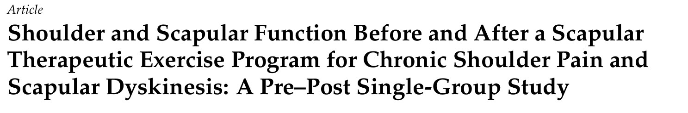
🔖原文标题（J Pers Med 2025;15:285，开放获取）
📚 文献信息
▪ Melo ASC, Soares AL, Castro C, Matias R, Cruz EB, Vilas-Boas JP, Sousa ASP. Shoulder and Scapular Function Before and After a Scapular Therapeutic Exercise Program for Chronic Shoulder Pain and Scapular Dyskinesis: A Pre–Post Single-Group Study. J Pers Med. 2025;15(7):285.
▪ 作者来自葡萄牙波尔图理工学院康复研究中心等机构
▪ 单组前后对照研究，临床试验注册号 NCT05814978；DOI：10.3390/jpm15070285
肩痛的人常伴有肩胛骨“不听话”：内侧缘或下角翘起来，抬手时肩胛耸得太高、转得不够。临床上大家都会给些肩胛稳定训练，但具体练哪几个、按什么顺序加量，各家说法不一。
这篇葡萄牙的研究给 18 名慢性肩痛伴肩胛运动障碍的成年人做了一套 8 周、每周 3 次的肩胛训练，前后测了疼痛、功能、肩胛三维运动和肌电。研究本身只有单组、没有对照，结论力度有限；但它把整套训练方案连同照片完整公开了，这部分最值得拿来参考。所以这篇推文以训练方案为主，结果简单带过。
• 18～65 岁，肩部（包括三角肌区、肩胛区）疼痛至少 3 个月，活动或静息时疼痛 ≥4/10
• 治疗师查体判断存在肩胛运动障碍（Ⅰ、Ⅱ、Ⅲ 型）
• 排除：肩部骨折、脱位、撕裂、手术史，近 3 个月接受过其他肩部治疗，颈胸椎疾病，竞技过头运动员或经常做高强度上肢力量训练的人，BMI 不在 18.5～30 范围内
作者用来筛查和描述肩胛问题的几个临床检查，门诊里都能直接用：
附表 A1 肩胛临床评估
| 检查 | 做法 | 判断标准 | 测试者内信度 |
|---|---|---|---|
| 胸小肌长度 | 站立放松，呼气末量第 4 肋胸骨处下缘到喙突内下缘的距离，除以身高（cm）再乘 100 | ＜7.44 为短缩 | ICC 0.82～0.95 |
| 肩胛提肌长度 | 站立，头颈中立，呼气末量 C2 横突到肩胛骨上角的距离，除以身高再乘 100 | ≤6.9 为短缩 | ICC 0.94～0.98 |
| 上斜方肌长度 | 坐位，被动对侧侧屈 + 同侧旋转颈部到上斜方肌最长，再上提同侧肩、继续被动活动颈部 | 上提肩后还能继续活动为短缩 | κ = 0.72（仅有无症状人群数据） |
| 肩胛运动障碍分型 | 站立，观察静息时及双臂在冠状面上举、放下 3～5 次 | Ⅰ型：下角突出；Ⅱ型：内侧缘突出；Ⅲ型：过度上提和/或上旋过多或不足；Ⅳ型：双侧对称正常 | κ = 0.49～0.59 |
| 肩胛辅助试验 | 先自己抬手，再由检查者推肩胛下内缘向上、向外并稳住上内缘，比较两次 | 辅助下症状减轻为阳性 | ICC 0.98～0.99 |
| 肩胛复位试验 | 抗阻维持肩上举，再由检查者把肩胛内缘稳定在更后缩、后倾的位置，比较两次 | 疼痛减轻或上举力量增加为阳性 | κ = 0.43 |
这 18 人里，Ⅱ型 7 人、Ⅲ型 3 人、Ⅱ+Ⅲ型 8 人；辅助试验或复位试验阳性的共 7 人，另外 11 人两个试验都是阴性。
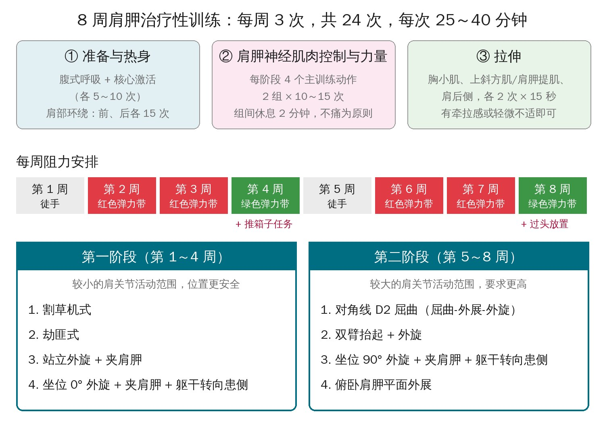
🔖8 周方案总览（按原文方法和附表自绘）
每次训练分三块：准备热身 → 肩胛神经肌肉控制和力量 → 拉伸。主训练动作的挑选有三个标准：目标肌肉至少达到最大（或次最大）激活的 21%，也就是中等程度的募集；考虑需要的肩关节活动范围；能同时动员更多肩胛肌，尤其是常见减弱的下斜方肌、中斜方肌和前锯肌。
动作分两个阶段：前 4 周在较小的活动范围内练，相对安全；后 4 周换成活动范围更大、难度更高的动作。能加上躯干或下肢动作的就尽量加，作者的想法是肩胛肌本来就是协同工作的，没必要孤立练某一块。
剂量：每个动作 2 组 × 10～15 次，中等速度，组间休息 2 分钟，全程不能痛。第 1、5 周徒手，第 2、3、6、7 周用红色弹力带（中等阻力），第 4、8 周用绿色弹力带（大阻力），弹力带张力按个人情况调整。整个过程由两位有 8 年以上临床经验的物理治疗师当面或视频一对一督导。
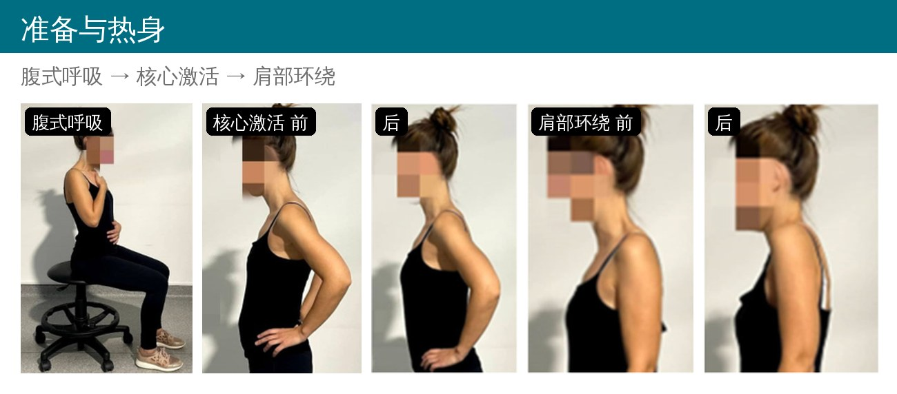
🔖附表 A2 准备与热身动作
• 腹式呼吸：坐或站直，一手放胸口、一手放肚子。吸气时肚子上的手往前，呼气时往回，胸口的手尽量不动
• 核心激活：坐或站直，呼吸的同时收紧腹肌
• 肩部环绕：双臂自然垂在身体两侧，保持腹式呼吸和核心收紧，肩膀向前绕 15 次、向后绕 15 次
前两个各做 5～10 次。作者的用意是先把呼吸模式和躯干稳定建立起来，再让肩胛去干活；热身则是提高局部温度和活动度。
以下说明里的“患侧”都指疼痛（或更痛）的那一侧。用弹力带时，健侧手一般只是固定弹力带的一端。
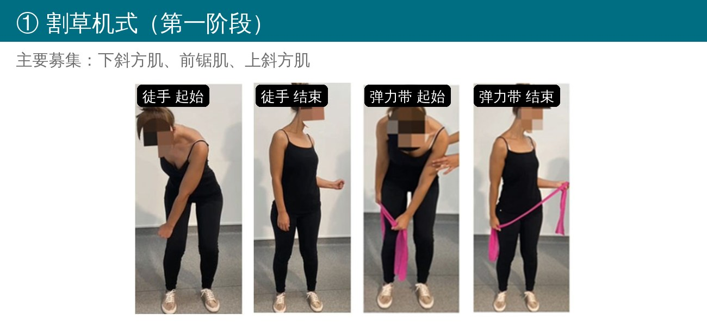
🔖割草机式
• 起始：站立，膝微屈，躯干前屈并转向健侧，患侧手放在对侧膝盖高度
• 动作：下肢和躯干伸直到站立位，同时躯干转向患侧，患侧肘往后拉到腰的高度（像去摸后裤兜），两侧肩胛一起后缩
• 加弹力带：两手握弹力带，间距与肩同宽，健侧手固定在同侧大腿旁，患侧往后拉开
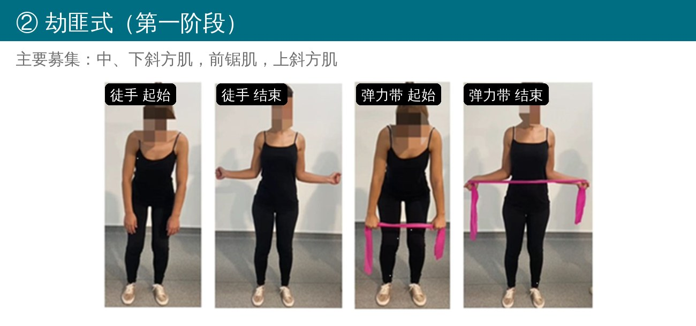
🔖劫匪式
• 起始：站立，躯干稍前倾、膝微屈，双臂伸直，掌心朝向大腿
• 动作：伸直下肢和躯干，同时双肘往后屈到 90°（往后裤兜方向），前臂外旋让两手向外分开，两侧肩胛同时后缩下沉
• 加弹力带：双手各握一段，间距与肩同宽，动作相同
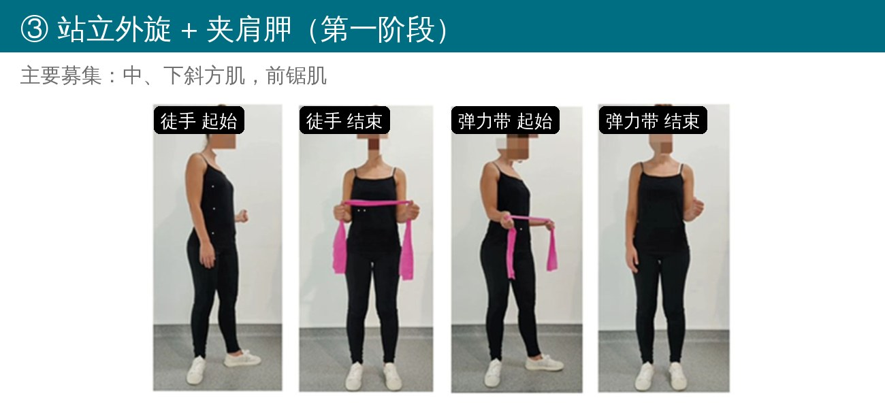
🔖站立外旋 + 夹肩胛
• 起始：站立，患侧屈肘 90°，肘贴身体
• 动作：患侧髋向外转，同时患侧手臂外旋（肘始终贴身，手向外、往后裤兜方向），两侧肩胛夹紧 3 秒
• 加弹力带：双手握弹力带与肩同宽，双肘屈 90° 贴身，健侧手只做固定
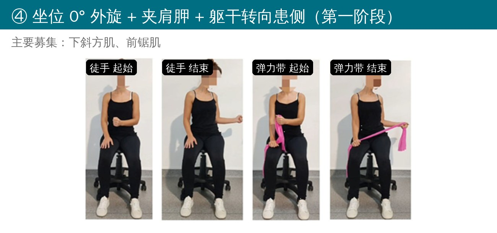
🔖坐位 0° 外旋 + 夹肩胛 + 躯干转向患侧
• 起始：坐位，屈髋屈膝 90°、双脚平放，目视前方，收腹保持躯干中立；患侧屈肘 90° 贴身，手指向对侧膝盖
• 动作：躯干转向患侧，同时患侧手尽量外旋，肘不离开身体，两侧肩胛夹紧 3 秒
• 加弹力带：双手握弹力带与肩同宽，健侧手放在大腿旁固定
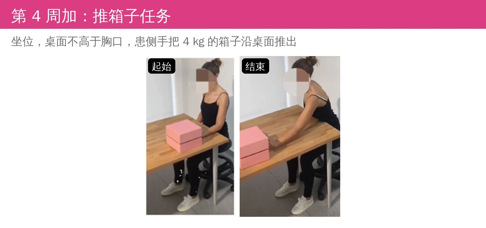
🔖第 4 周加入：推箱子任务
坐在桌前，屈髋屈膝 90°，颈、躯干、骨盆保持中立；桌面不高于胸口，桌上放一个 4 kg 的箱子，用患侧手把箱子沿桌面推出去。
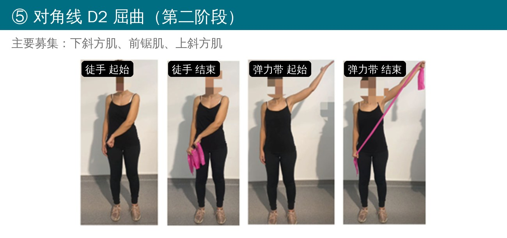
🔖对角线 D2 屈曲（屈曲-外展-外旋）
• 起始：站立，收腹，躯干骨盆中立；患侧手放在对侧髋部，手内旋朝向髋
• 动作：患侧手臂向外、向上尽量举高，同时手外旋
• 加弹力带：健侧手握一端固定在同侧大腿旁，患侧手握另一端放在对侧大腿旁，弹力带长度约与肩同宽
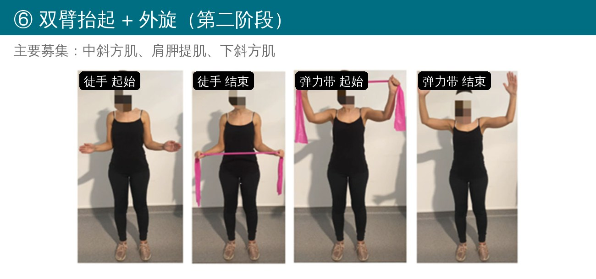
🔖双臂抬起 + 外旋
• 起始：站立，躯干骨盆中立；双肘屈 90° 贴身，双手稍离开中线、拇指朝上
• 动作：保持双手间距和姿势不变，双臂同时抬起，直到肘与肩同高（90°）
• 加弹力带：双手各握一段，间距与肩同宽，手稍外分约 30°，弹力带全程绷紧
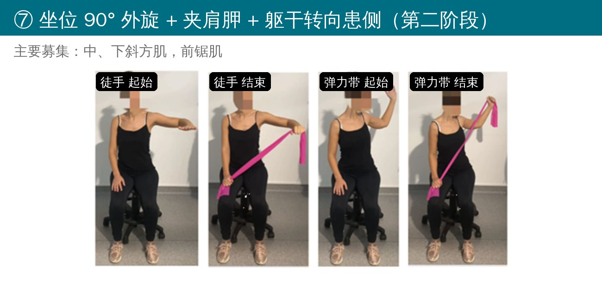
🔖坐位 90° 外旋 + 夹肩胛 + 躯干转向患侧
• 起始：坐位，收腹，躯干骨盆中立；患侧肩外展到肘与肩同高，屈肘 90°，手指向前
• 动作：躯干转向患侧，同时患侧手尽量向上外旋，两侧肩胛夹紧 3 秒
• 加弹力带：健侧手放大腿上固定弹力带，弹力带长度从健侧大腿到患侧肩
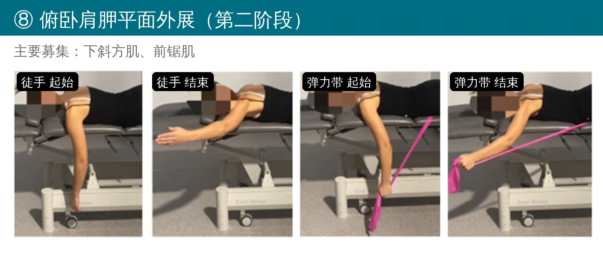
🔖俯卧肩胛平面外展
• 起始：俯卧在治疗床上，额头垫小毛巾；患侧手臂伸出床沿自然下垂，肘伸直；健侧手臂放松放在床上
• 动作：患侧手臂向斜上方抬起，直到与地面平行、与身体成斜线，像摆出半个“Y”
• 加弹力带：弹力带一端压在身体下面固定，患侧手握另一端
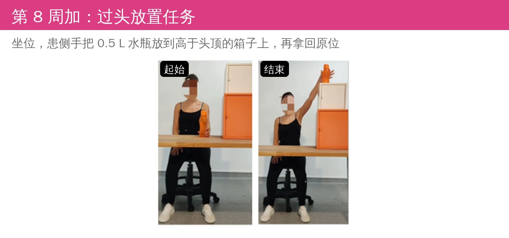
🔖第 8 周加入：过头放置任务
坐在桌前，桌上叠放箱子，顶部要高过坐着时的头顶；用患侧手把一瓶 0.5 L 的水放到箱子顶上，再拿回原位。和第 4 周的推箱子一样，目的是把肩胛的控制带到真实的手部动作里。
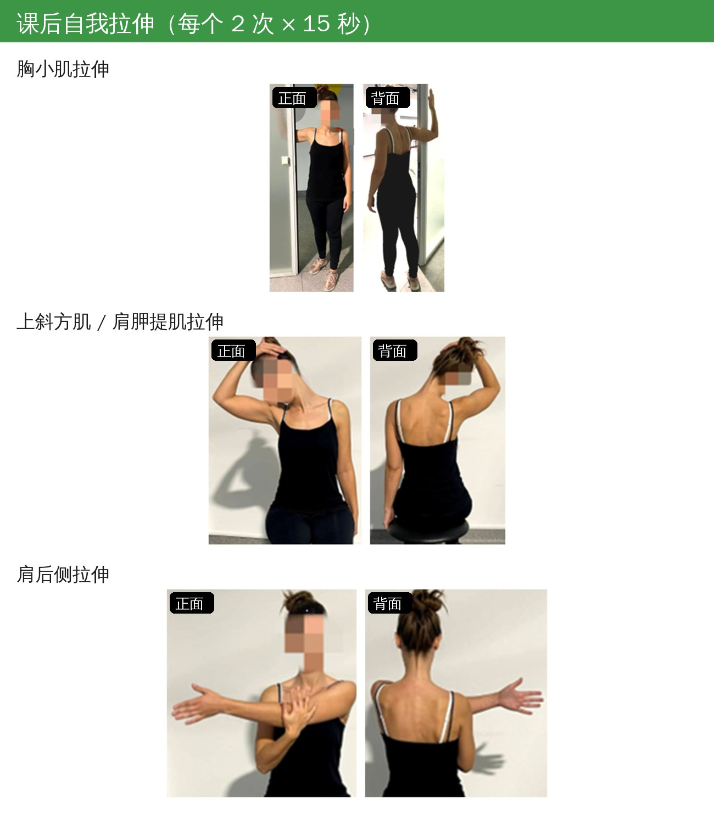
🔖附表 A4 肩胛与肩后侧自我拉伸
• 胸小肌：站立，患侧上臂抬到肘与肩同高、屈肘 90°，手掌贴墙，躯干前倾并转向健侧
• 上斜方肌 / 肩胛提肌：坐位，患侧手抓住椅面让肩下沉；头向健侧侧屈并转向健侧，健侧手把头往健侧腋窝方向带
• 肩后侧：坐位，患侧手臂抬到肩高，健侧手把患侧肘向身体方向压
每个拉伸 2 次 × 15 秒，拉到有牵拉感或轻微不适即可。
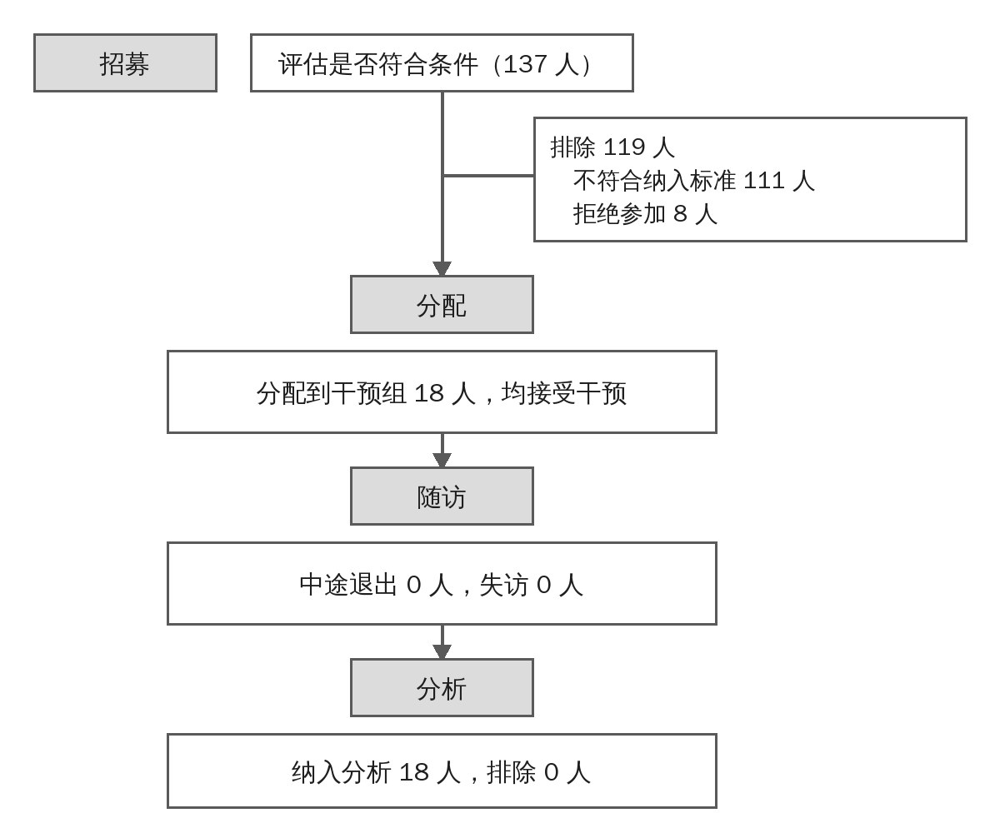
🔖原文图 1 受试者流程（中文重绘）
137 人报名，18 人纳入（16 女 2 男，平均 43 岁）。没有人退出，只有 1 人少练了一次，也没有出现不良反应。
表 3 受试者基本情况（n = 18）
| 项目 | 结果 |
|---|---|
| 身高（m） | 1.66 ± 0.06 |
| 体重（kg） | 63.50 ± 8.35 |
| BMI（kg/m²） | 23.19 ± 2.94 |
| 年龄（岁） | 43.44 ± 13.93 |
| 胸小肌长度指数 | 9.35 ± 0.69 |
| 肩胛提肌长度指数 | 8.89 ± 0.76 |
| 性别 | 女 89%（16），男 11%（2） |
| 利手 | 右利手 89%（16），左利手 11%（2） |
| 疼痛侧 | 利手侧 44%（8），非利手侧 56%（10） |
| 运动障碍分型 | Ⅱ型 39%（7），Ⅲ型 17%（3），Ⅱ+Ⅲ型 44%（8） |
| 症状改变试验 | 均阴性 61%（11）；辅助试验阳性 17%（3）；复位试验阳性 11%（2）；两者均阳性 11%（2） |
表 4 疼痛、功能、心理和肌肉硬度：干预前后
| 指标 | 干预前 | 干预后 | P 值 | 效应量 |
|---|---|---|---|---|
| SPADI 肩痛与功能指数（均数±标准差） | 31.72 ± 17.68 | 8.17 ± 6.18 | ＜0.0001* | 1.44 |
| 疼痛 NRS（中位数±四分位距） | 5.50 ± 3.00 | 1.00 ± 2.00 | ＜0.0001* | — |
| 疼痛灾难化量表 | 10.00 ± 9.75 | 1.50 ± 9.00 | 0.004* | — |
| Tampa 运动恐惧量表 | 24.00 ± 6.00 | 20.50 ± 12.50 | 0.106 | — |
| 中斜方肌硬度（N/m） | 452.48 ± 110.91 | 395.09 ± 80.02 | 0.014* | 0.64 |
| 上斜方肌硬度 | 388.00 ± 83.89 | 390.98 ± 67.72 | 0.833 | −0.05 |
| 下斜方肌硬度 | 516.63 ± 127.41 | 504.00 ± 97.45 | 0.465 | 0.18 |
| 肩胛提肌硬度（中位数±四分位距） | 223.17 ± 57.42 | 249.59 ± 74.00 | 0.231 | — |
| 前锯肌上中部硬度 | 179.50 ± 43.33 | 187.83 ± 80.67 | 0.276 | — |
| 前锯肌下部硬度 | 182.83 ± 98.08 | 175.67 ± 95.33 | 0.758 | — |
🔖* 差异有统计学意义。前锯肌上中部干预后的四分位距原文印作“8067”，此处按 80.67 处理
主观指标的变化很明显：疼痛中位数从 5.5 降到 1，SPADI 平均降了 23.6 分，都超过了最小临床重要差异（疼痛 2.17、SPADI 13.2）。18 人对自己变化的评价都在 4～7 分之间，其中 8 人打了最高的 7 分。疼痛灾难化分数虽然有统计学差异，但降幅没超过量表的最小可检测变化，而且大家一开始就不高。
客观指标是让受试者坐着喝一瓶 330 ml 的水，分伸手、向前运送、饮水、向后运送、放回五个阶段测肩胛运动和肌电：
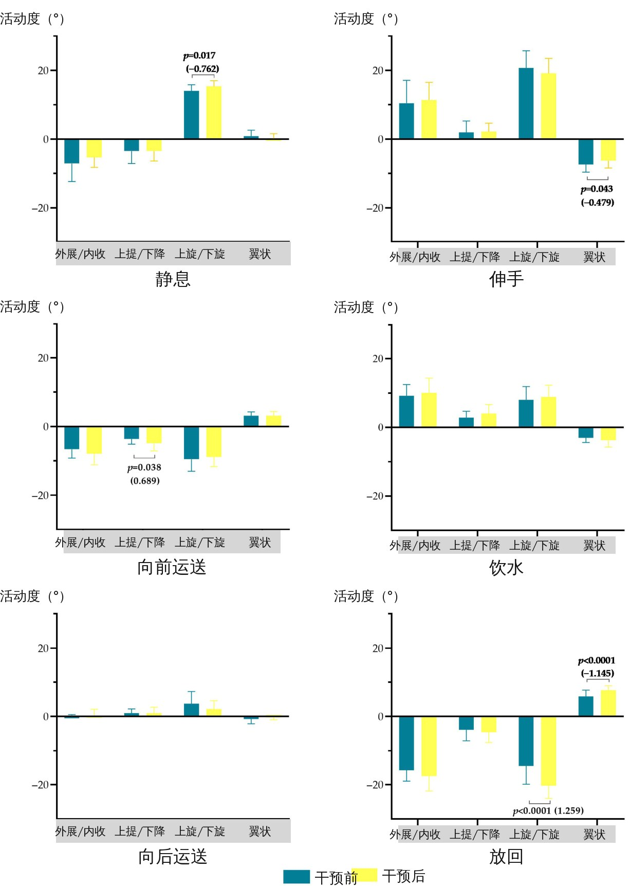
🔖原文图 2 喝水任务中肩胛的位置与活动度（标签改为中文；蓝色为干预前，黄色为干预后，只标出有差异的结果）
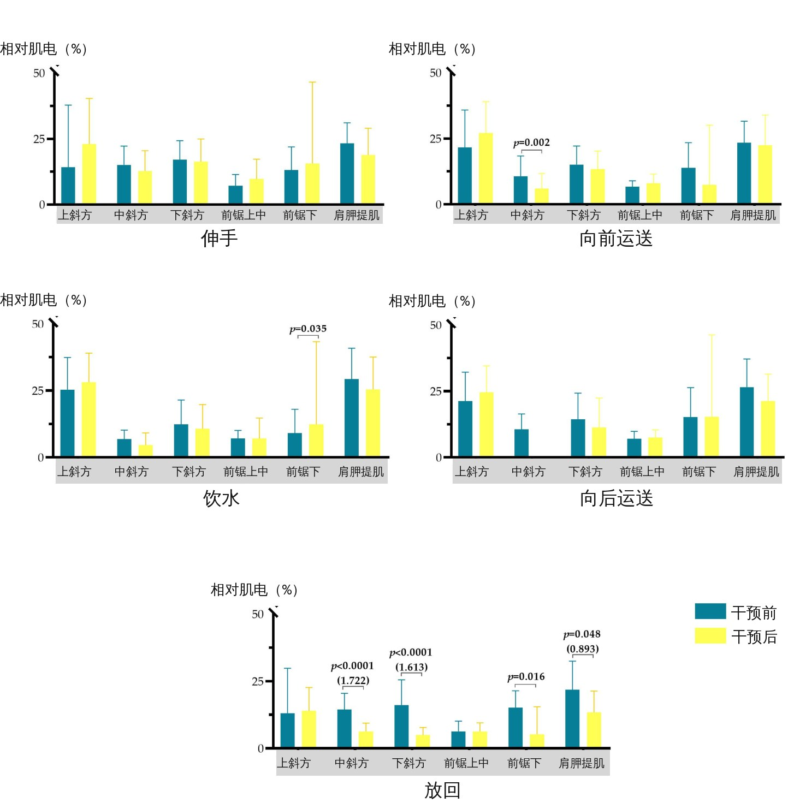
🔖原文图 3 喝水任务中肩胛肌的激活水平（标签改为中文；纵轴原有 50 以上的断轴部分，无数据，已省略）
表 5 肩肱节律和动作质量：干预前后
| 指标 | 干预前 | 干预后 | 统计值 / P 值 | 效应量 |
|---|---|---|---|---|
| 肩肱节律（全程） | 1.577 ± 0.51 | 1.545 ± 0.37 | 0.315 / 0.757 | 0.072 |
| 整体动作流畅度（全程） | 2.164 ± 0.86 | 2.941 ± 0.23 | −3.567 / 0.003* | −0.865 |
| 达到加速度峰值的时间（%，全程） | 54.055 ± 15.71 | 53.284 ± 10.26 | 0.191 / 0.851 | 0.045 |
| 躯干前屈（°，静息） | 0.380 ± 0.44 | 0.134 ± 0.54 | 1.228 / 0.240 | 0.317 |
| 躯干前屈（°，全程） | −6.847 ± 3.86 | −8.407 ± 3.96 | 1.431 / 0.174 | 0.369 |
| 躯干侧屈（°，静息） | 0.001 ± 0.42 | −0.020 ± 0.31 | 0.139 / 0.891 | 0.036 |
| 躯干侧屈（°，全程，中位数） | −0.138 ± 2.78 | 1.454 ± 5.02 | 82.000 / 0.211 | — |
| 躯干旋转（°，静息，中位数） | 0.003 ± 0.51 | −0.015 ± 0.37 | 59.000 / 0.407 | — |
| 躯干旋转（°，全程，中位数） | 5.257 ± 4.92 | 5.125 ± 9.03 | 59.000 / 0.683 | — |
• 放回阶段，肩胛下旋活动度增加约 5.9°、翼状活动度增加约 1.9°，效应量都大；静息时上旋增加约 1.3°，但没超过测量误差
• 放回阶段，中斜方肌、下斜方肌、前锯肌下部和肩胛提肌的激活都下降；饮水阶段前锯肌下部激活略有上升（没超过测量误差）
• 中斜方肌硬度下降约 57 N/m，同样没超过测量误差
• 有意思的是，“动作流畅度”反而变差了。作者解释说，疼痛人群有时动作过于刻板、看起来“很流畅”，训练后变得不那么刻板，未必是坏事，不过这只是推测
• 单组前后对比，没有对照组。慢性肩痛本身会波动，加上一对一督导和受试者的期待，疼痛和功能的改善有多少是训练带来的，这个设计回答不了。作者也明确说这只是为随机对照试验做准备
• 样本只有 18 人，女性占 89%，基线疼痛中等、功能受限不重、心理状况良好，从高校通过邮件招募。换到门诊里更重、病程更长的患者，效果未必一样
• 测了二十多个指标、做了大量比较，没有校正多重比较，有些“显著”可能是假阳性。作者自己也承认结果只能算“提出假设”
• 不少客观指标的信度偏低：肩胛外展/内收的 ICC 只有 0.14，肩肱节律 0.38；好几个显著变化都没超过最小可检测变化
• 前锯肌上中部肌电信度的 95% 置信区间印成了 [6.15; 0.97]，下限比上限还大；表 4 也有“8067”这样的排印错误
• 方法里疼痛 NRS 的最小临床重要差异写的是 2.17，样本量计算里又用了 2.7；效应量分级引用的文献 [65]，其实是那篇提出“过头放置任务”的文献
• 原文的方案说明写的是分别拉伸胸小肌、肩胛提肌、上斜方肌和后关节囊 4 个部位，附表里上斜方肌和肩胛提肌合成了一个动作
这套方案最实用的地方，是把“肩胛稳定训练”拆得很具体：先建立呼吸和躯干控制，再在小范围内用多关节动作（割草机、劫匪式）练肩胛后缩和下沉，4 周后过渡到抬高位的外旋、D2 对角线和俯卧 Y 字，最后用推箱子、过头放东西这样的生活任务收尾。
几个可以直接借鉴的细节：躯干旋转和外旋结合、夹肩胛停 3 秒、每周换一次阻力档位、第 1 周和第 5 周先徒手学动作、全程不痛。至于效果，目前只能说“值得一试”，要等随机对照试验才能下结论。
表 1 肌肉硬度、肌电电极位置和标准化收缩体位
| 肌肉 | 硬度测量位置 | 肌电电极位置 | 次最大等长收缩体位 |
|---|---|---|---|
| 上斜方肌 | C7 棘突与肩峰角连线中点 | C7 棘突与肩峰后缘连线中点外侧 2 cm | 坐位，肩外展 90°，颈部同侧侧屈、对侧旋转并后伸 |
| 中斜方肌 | T4 棘突与肩胛冈内缘连线中点 | 肩胛冈根部与 T3 棘突连线中点 | 俯卧，肩水平外展 + 外旋 |
| 下斜方肌 | T6 棘突与肩胛冈内缘连线中点 | 肩胛冈根部与 T8 棘突连线的 2/3 处 | 俯卧，肩斜向外展 135° |
| 前锯肌上中部 | — | 第 4 肋上，背阔肌与胸大肌中间 | 仰卧，肩前屈 + 内收 + 外旋 |
| 前锯肌下部 | — | 第 7 肋上，腋中部 | 仰卧，肩前屈 125° |
| 肩胛提肌 | — | 胸锁乳突肌与上斜方肌之间，C4/C5 水平 | 俯卧，肩水平外展 + 外旋 |
🔖前锯肌两部分的测试体位由坐位改为仰卧位，保留原测试的两个阻力点
表 2 肌电和运动学指标的测试者内重测信度
| 指标 | ICC | 95% 置信区间 | 测量标准误 | 最小可检测变化 |
|---|---|---|---|---|
| 上斜方肌肌电（%） | 0.78 | 0.16～0.94 | 3.83 | 10.60 |
| 中斜方肌肌电（%） | 0.56 | −1.48～0.92 | 1.39 | 3.86 |
| 下斜方肌肌电（%） | 0.69 | −0.06～0.92 | 3.64 | 10.09 |
| 前锯肌上中部肌电（%） | 0.42 | 6.15～0.97（原文如此） | 4.14 | 11.46 |
| 前锯肌下部肌电（%） | 0.89 | 0.55～0.98 | 2.33 | 6.46 |
| 肩胛提肌肌电（%） | 0.93 | 0.38～0.99 | 0.75 | 2.08 |
| 肩胛外展/内收（°） | 0.14 | −2.97～0.78 | 1.41 | 3.91 |
| 肩胛上提/下降（°） | 0.73 | 0.01～0.92 | 0.36 | 0.99 |
| 肩胛上旋/下旋（°） | 0.63 | −0.19～0.90 | 0.35 | 0.98 |
| 肩胛翼状（°） | 0.66 | −0.09～0.90 | 0.23 | 0.63 |
| 肩肱节律 | 0.38 | −1.30～0.83 | 0.40 | 1.11 |
| 躯干前屈（°） | 0.71 | −0.21～0.93 | 1.11 | 3.07 |
| 躯干旋转（°） | 0.35 | −3.14～0.87 | 2.74 | 7.60 |
| 躯干侧屈（°） | 0.74 | −0.15～0.94 | 0.65 | 1.81 |
| 达到加速度峰值的时间（%） | 0.63 | −0.50～0.92 | 5.53 | 15.33 |
| 整体动作流畅度 | 0.76 | −0.03～0.94 | 0.11 | 0.30 |
欢迎关注骨科康复小黄公众号，获取更多物理治疗的专业知识！
📄参考文献：
Melo ASC, Soares AL, Castro C, Matias R, Cruz EB, Vilas-Boas JP, Sousa ASP. Shoulder and Scapular Function Before and After a Scapular Therapeutic Exercise Program for Chronic Shoulder Pain and Scapular Dyskinesis: A Pre–Post Single-Group Study. J Pers Med. 2025;15(7):285. doi:10.3390/jpm15070285
原文以 CC BY 4.0 协议开放获取。动作照片来自原文附表 A2～A4（人脸原文已打码），图 2、图 3 标签改为中文，方案总览和流程图为编者绘制，仅用于学术交流。